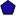

<!doctype html>
<html lang="en">
    <head>
        <meta charset="utf-8">
        <meta http-equiv="X-UA-Compatible" content="IE=edge">
        <meta name="viewport" content="initial-scale=1,user-scalable=no,maximum-scale=1,width=device-width">
        <meta name="mobile-web-app-capable" content="yes">
        <meta name="apple-mobile-web-app-capable" content="yes">
        <link rel="stylesheet" href="css/leaflet.css"><link rel="stylesheet" href="http://maxcdn.bootstrapcdn.com/font-awesome/4.6.1/css/font-awesome.min.css"><link rel="stylesheet" href="css/L.Control.Locate.min.css">
        <link rel="stylesheet" href="css/qgis2web.css">
        <link rel="stylesheet" href="css/MarkerCluster.css">
        <link rel="stylesheet" href="css/MarkerCluster.Default.css">
        <link rel="stylesheet" href="css/leaflet-measure.css">
        <style>
        html, body, #map {
            width: 100%;
            height: 100%;
            padding: 0;
            margin: 0;
        }
        </style>
        <title></title>
    </head>
    <body>
        <div id="map">
        </div>
        <script src="js/qgis2web_expressions.js"></script>
        <script src="js/leaflet.js"></script><script src="js/L.Control.Locate.min.js"></script>
        <script src="js/leaflet-svg-shape-markers.min.js"></script>
        <script src="js/leaflet.rotatedMarker.js"></script>
        <script src="js/leaflet.pattern.js"></script>
        <script src="js/leaflet-hash.js"></script>
        <script src="js/Autolinker.min.js"></script>
        <script src="js/rbush.min.js"></script>
        <script src="js/labelgun.min.js"></script>
        <script src="js/labels.js"></script>
        <script src="js/leaflet-measure.js"></script>
        <script src="js/leaflet.markercluster.js"></script>
        <script src="data/schools_0.js"></script>
        <script src="data/pharmacy_1.js"></script>
        <script>
        var highlightLayer;
        function highlightFeature(e) {
            highlightLayer = e.target;

            if (e.target.feature.geometry.type === 'LineString') {
              highlightLayer.setStyle({
                color: '#ffff00',
              });
            } else {
              highlightLayer.setStyle({
                fillColor: '#ffff00',
                fillOpacity: 1
              });
            }
        }
        var map = L.map('map', {
            zoomControl:true, maxZoom:28, minZoom:1
        }).fitBounds([[5.19324625829,-3.78545954928],[5.24438488638,-3.71699395072]]);
        var hash = new L.Hash(map);
        map.attributionControl.addAttribution('<a href="https://github.com/tomchadwin/qgis2web" target="_blank">qgis2web</a>');
        L.control.locate().addTo(map);
        var measureControl = new L.Control.Measure({
            primaryLengthUnit: 'meters',
            secondaryLengthUnit: 'kilometers',
            primaryAreaUnit: 'sqmeters',
            secondaryAreaUnit: 'hectares'
        });
        measureControl.addTo(map);
        var bounds_group = new L.featureGroup([]);
        var basemap0 = L.tileLayer('http://{s}.tile.openstreetmap.fr/hot/{z}/{x}/{y}.png', {
            attribution: '&copy; <a href="http://openstreetmap.org">OpenStreetMap</a> contributors,<a href="http://creativecommons.org/licenses/by-sa/2.0/">CC-BY-SA</a>,Tiles courtesy of <a href="http://hot.openstreetmap.org/" target="_blank">Humanitarian OpenStreetMap Team</a>',
            maxZoom: 28
        });
        basemap0.addTo(map);
        function setBounds() {
        }
        function pop_schools_0(feature, layer) {
            layer.on({
                mouseout: function(e) {
                    for (i in e.target._eventParents) {
                        e.target._eventParents[i].resetStyle(e.target);
                    }
                },
                mouseover: highlightFeature,
            });
            var popupContent = '<table>\
                    <tr>\
                        <td colspan="2">' + (feature.properties['type'] !== null ? Autolinker.link(String(feature.properties['type'])) : '') + '</td>\
                    </tr>\
                    <tr>\
                        <td colspan="2">' + (feature.properties['nom'] !== null ? Autolinker.link(String(feature.properties['nom'])) : '') + '</td>\
                    </tr>\
                    <tr>\
                        <td colspan="2">' + (feature.properties['source'] !== null ? Autolinker.link(String(feature.properties['source'])) : '') + '</td>\
                    </tr>\
                    <tr>\
                        <td colspan="2">' + (feature.properties['operateur'] !== null ? Autolinker.link(String(feature.properties['operateur'])) : '') + '</td>\
                    </tr>\
                    <tr>\
                        <td colspan="2">' + (feature.properties['ville'] !== null ? Autolinker.link(String(feature.properties['ville'])) : '') + '</td>\
                    </tr>\
                    <tr>\
                        <td colspan="2">' + (feature.properties['date-crea'] !== null ? Autolinker.link(String(feature.properties['date-crea'])) : '') + '</td>\
                    </tr>\
                    <tr>\
                        <td colspan="2">' + (feature.properties['effectif'] !== null ? Autolinker.link(String(feature.properties['effectif'])) : '') + '</td>\
                    </tr>\
                    <tr>\
                        <td colspan="2">' + (feature.properties['directeur'] !== null ? Autolinker.link(String(feature.properties['directeur'])) : '') + '</td>\
                    </tr>\
                    <tr>\
                        <td colspan="2">' + (feature.properties['Phone'] !== null ? Autolinker.link(String(feature.properties['Phone'])) : '') + '</td>\
                    </tr>\
                    <tr>\
                        <td colspan="2">' + (feature.properties['uuid'] !== null ? Autolinker.link(String(feature.properties['uuid'])) : '') + '</td>\
                    </tr>\
                    <tr>\
                        <td colspan="2">' + (feature.properties['editepar'] !== null ? Autolinker.link(String(feature.properties['editepar'])) : '') + '</td>\
                    </tr>\
                    <tr>\
                        <td colspan="2">' + (feature.properties['creepar'] !== null ? Autolinker.link(String(feature.properties['creepar'])) : '') + '</td>\
                    </tr>\
                    <tr>\
                        <td colspan="2">' + (feature.properties['editedate'] !== null ? Autolinker.link(String(feature.properties['editedate'])) : '') + '</td>\
                    </tr>\
                    <tr>\
                        <td colspan="2">' + (feature.properties['creedate'] !== null ? Autolinker.link(String(feature.properties['creedate'])) : '') + '</td>\
                    </tr>\
                </table>';
            layer.bindPopup(popupContent, {maxHeight: 400});
        }

        function style_schools_0_0() {
            return {
                pane: 'pane_schools_0',
                radius: 8.0,
                opacity: 1,
                color: 'rgba(0,0,0,1.0)',
                dashArray: '',
                lineCap: 'butt',
                lineJoin: 'miter',
                weight: 1,
                fill: true,
                fillOpacity: 1,
                fillColor: 'rgba(27,10,160,1.0)',
            }
        }
        map.createPane('pane_schools_0');
        map.getPane('pane_schools_0').style.zIndex = 400;
        map.getPane('pane_schools_0').style['mix-blend-mode'] = 'normal';
        var layer_schools_0 = new L.geoJson(json_schools_0, {
            attribution: '<a href=""></a>',
            pane: 'pane_schools_0',
            onEachFeature: pop_schools_0,
            pointToLayer: function (feature, latlng) {
                var context = {
                    feature: feature,
                    variables: {}
                };
                return L.shapeMarker(latlng, style_schools_0_0(feature));
            },
        });
        var cluster_schools_0 = new L.MarkerClusterGroup({showCoverageOnHover: false,
            spiderfyDistanceMultiplier: 2});
        cluster_schools_0.addLayer(layer_schools_0);

        bounds_group.addLayer(layer_schools_0);
        cluster_schools_0.addTo(map);
        function pop_pharmacy_1(feature, layer) {
            layer.on({
                mouseout: function(e) {
                    for (i in e.target._eventParents) {
                        e.target._eventParents[i].resetStyle(e.target);
                    }
                },
                mouseover: highlightFeature,
            });
            var popupContent = '<table>\
                    <tr>\
                        <td colspan="2">' + (feature.properties['type'] !== null ? Autolinker.link(String(feature.properties['type'])) : '') + '</td>\
                    </tr>\
                    <tr>\
                        <td colspan="2">' + (feature.properties['nom'] !== null ? Autolinker.link(String(feature.properties['nom'])) : '') + '</td>\
                    </tr>\
                    <tr>\
                        <td colspan="2">' + (feature.properties['heure_ouv'] !== null ? Autolinker.link(String(feature.properties['heure_ouv'])) : '') + '</td>\
                    </tr>\
                    <tr>\
                        <td colspan="2">' + (feature.properties['phone'] !== null ? Autolinker.link(String(feature.properties['phone'])) : '') + '</td>\
                    </tr>\
                    <tr>\
                        <td colspan="2">' + (feature.properties['ordonnance'] !== null ? Autolinker.link(String(feature.properties['ordonnance'])) : '') + '</td>\
                    </tr>\
                    <tr>\
                        <td colspan="2">' + (feature.properties['pays'] !== null ? Autolinker.link(String(feature.properties['pays'])) : '') + '</td>\
                    </tr>\
                    <tr>\
                        <td colspan="2">' + (feature.properties['ville'] !== null ? Autolinker.link(String(feature.properties['ville'])) : '') + '</td>\
                    </tr>\
                    <tr>\
                        <td colspan="2">' + (feature.properties['uuid'] !== null ? Autolinker.link(String(feature.properties['uuid'])) : '') + '</td>\
                    </tr>\
                    <tr>\
                        <td colspan="2">' + (feature.properties['editepar'] !== null ? Autolinker.link(String(feature.properties['editepar'])) : '') + '</td>\
                    </tr>\
                    <tr>\
                        <td colspan="2">' + (feature.properties['creepar'] !== null ? Autolinker.link(String(feature.properties['creepar'])) : '') + '</td>\
                    </tr>\
                    <tr>\
                        <td colspan="2">' + (feature.properties['editedate'] !== null ? Autolinker.link(String(feature.properties['editedate'])) : '') + '</td>\
                    </tr>\
                    <tr>\
                        <td colspan="2">' + (feature.properties['creedate'] !== null ? Autolinker.link(String(feature.properties['creedate'])) : '') + '</td>\
                    </tr>\
                </table>';
            layer.bindPopup(popupContent, {maxHeight: 400});
        }

        function style_pharmacy_1_0() {
            return {
                pane: 'pane_pharmacy_1',
                radius: 8.0,
                opacity: 1,
                color: 'rgba(0,0,0,1.0)',
                dashArray: '',
                lineCap: 'butt',
                lineJoin: 'miter',
                weight: 1,
                fill: true,
                fillOpacity: 1,
                fillColor: 'rgba(51,160,44,1.0)',
            }
        }
        map.createPane('pane_pharmacy_1');
        map.getPane('pane_pharmacy_1').style.zIndex = 401;
        map.getPane('pane_pharmacy_1').style['mix-blend-mode'] = 'normal';
        var layer_pharmacy_1 = new L.geoJson(json_pharmacy_1, {
            attribution: '<a href=""></a>',
            pane: 'pane_pharmacy_1',
            onEachFeature: pop_pharmacy_1,
            pointToLayer: function (feature, latlng) {
                var context = {
                    feature: feature,
                    variables: {}
                };
                return L.shapeMarker(latlng, style_pharmacy_1_0(feature));
            },
        });
        var cluster_pharmacy_1 = new L.MarkerClusterGroup({showCoverageOnHover: false,
            spiderfyDistanceMultiplier: 2});
        cluster_pharmacy_1.addLayer(layer_pharmacy_1);

        bounds_group.addLayer(layer_pharmacy_1);
        cluster_pharmacy_1.addTo(map);
        var baseMaps = {};
        L.control.layers(baseMaps,{' pharmacy': cluster_pharmacy_1,' schools': cluster_schools_0,},{collapsed:false}).addTo(map);
        setBounds();
        </script>
    </body>
</html>
